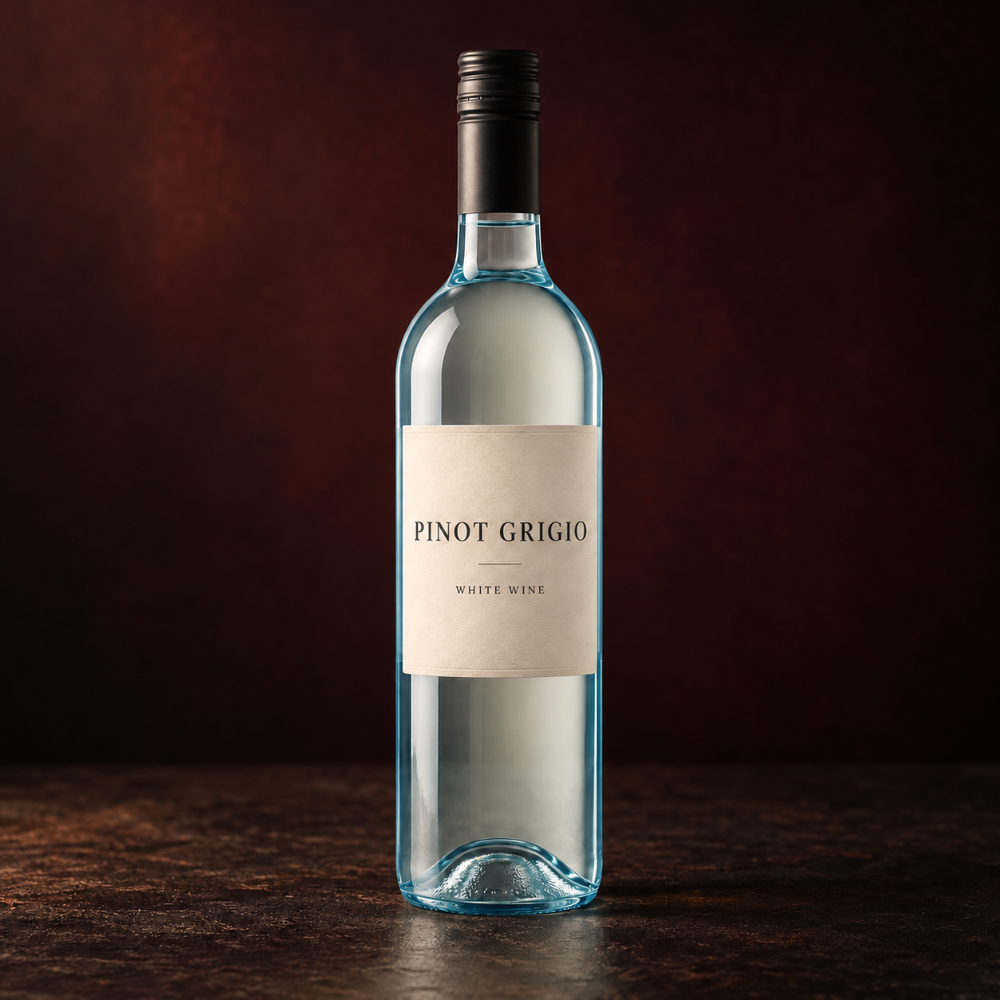
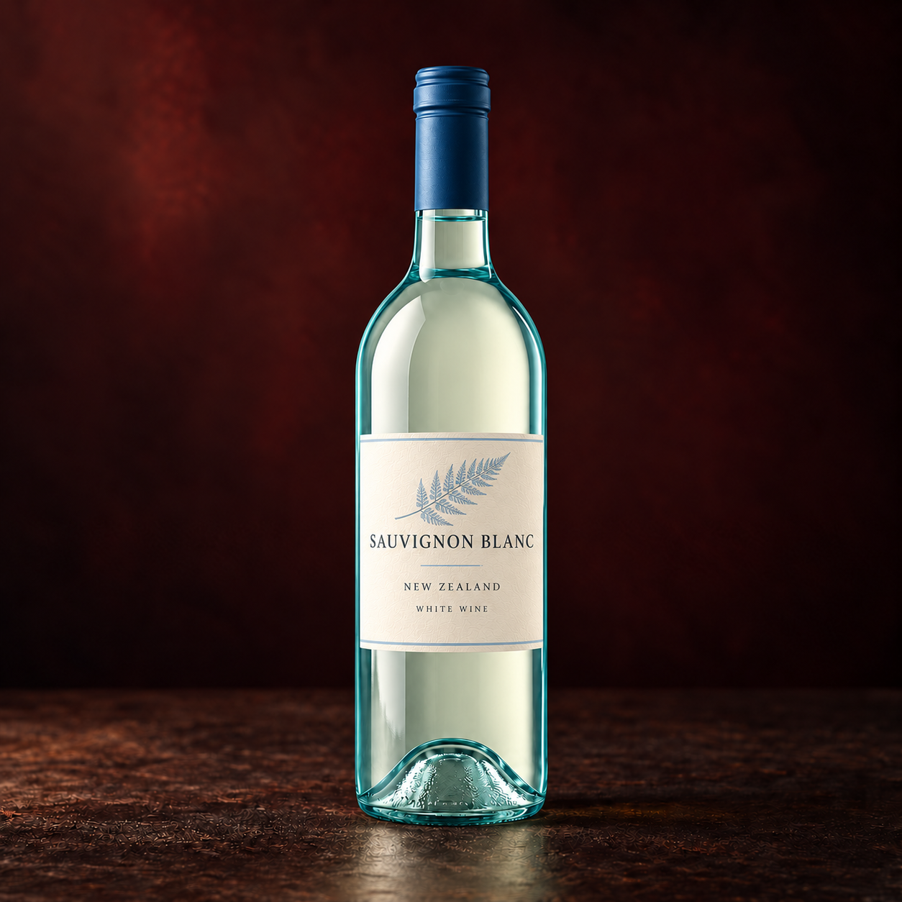
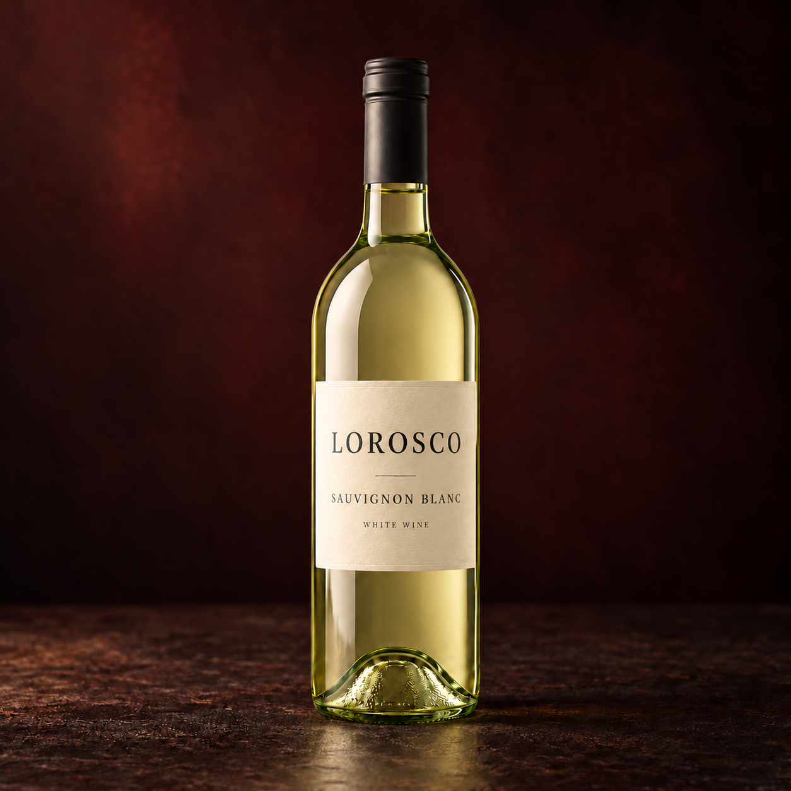
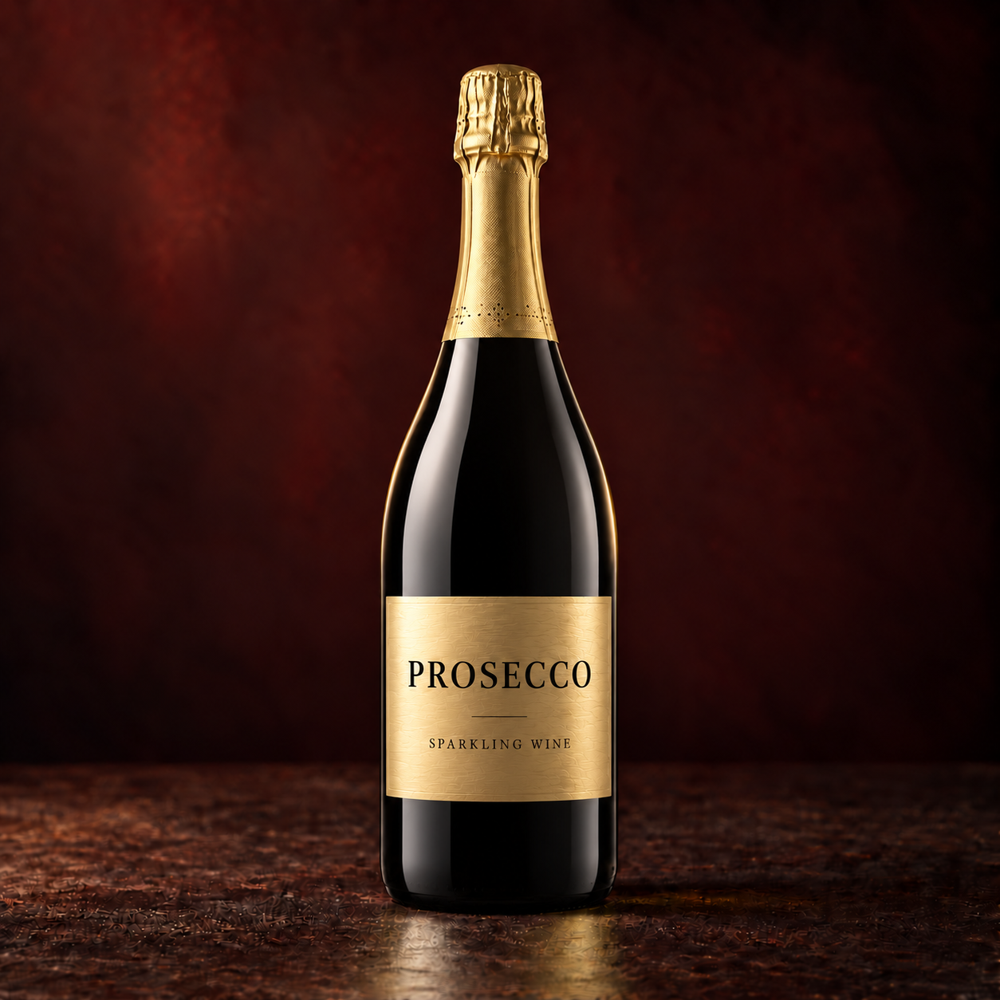
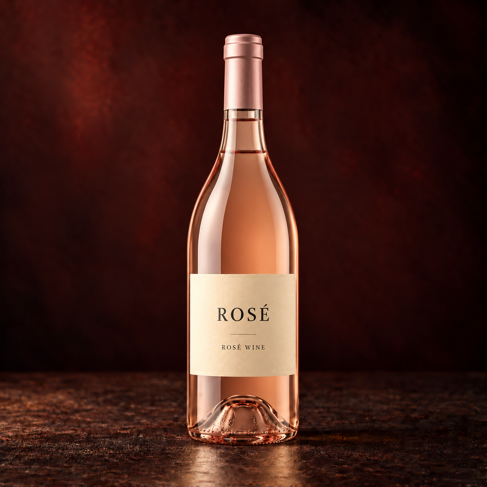

Pinot Grigio
A light, refreshing white wine with delicate pear, green apple and citrus notes, followed by a crisp finish.
Good drinks. Great company.
Discover six classic favourites, from fresh and fruity drinks to rich coffee flavours.

A light, refreshing white wine with delicate pear, green apple and citrus notes, followed by a crisp finish.
A smooth white wine with apple, peach and gentle citrus flavours, offering a rounded, fruity finish.

A lively white wine with tropical fruit, lime and fresh herbal notes, balanced by a bright, refreshing finish.

A fresh, fruity white wine with citrus and green apple notes, offering a light and refreshing finish.

A sparkling white wine with delicate bubbles and notes of pear, apple and white flowers.

A delicate pink wine with strawberry, raspberry and subtle citrus notes, offering a fresh, fruity finish.